Instalacion
Esta guia sirve tanto para instalar Arch Linux de manear fisica como virtual (VMware).
VMware
Creamos la maquina virtual con las estas propiedades.
"File" -> "New Virtual Machine" -> "Typical (recommended)" -> "I will install the operating system later" -> "Linux" y "Other Linux 5.x kernel 64-bit" -> Nombre de la maquina virtual ('Amicia' en mi caso) -> "100GB" y "Split virtual into multiple files" -> "Customize Hardware", Remove "Printer" y Subir RAM a "4GB", "Close" y "Finish".
Configurar el tipo de Firmware a UEFI.
"Edit virtual machine settings", "Options" -> "Guest Isolation" Hacer uncheck a todo, "Advance" elegir "UEFI in Firmware type" y "Ok".
Para cargar la ISO del Arch Linux.
"Edit virtual machine settings", "CD/DVD (IDE)", "Use ISO image file", "Browse" aqui buscaremos la iso -> "Ok".
(Opcional)
=====================
Ahora arracamos la maquina virtual.
Layout
La layout de Arch por defecto vienen en US si la deseas cambiar a castellano.
loadkeys es
Para ver todas las layouts locatectl list-keymaps
Conexion a internet
Verificamos que tenemos conexion.
ping google.es
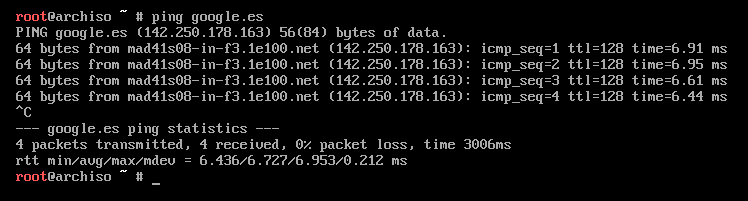UEFI
Verificamos que estamos en UEFI, si sale algo similar a la imagen estamos ante UEFI.
ls /sys/firmware/efi/efivars/
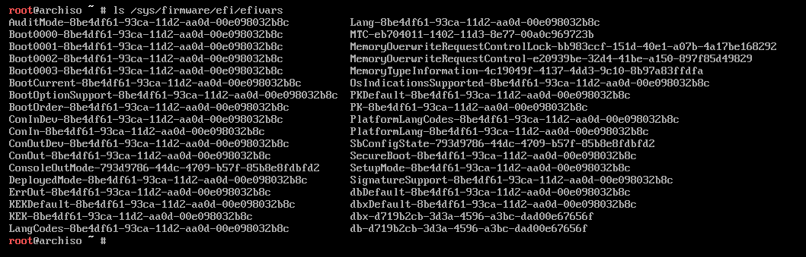Particiones
Con lsblk (list block) podemos ver todas las particiones de todos los discos
lsblk
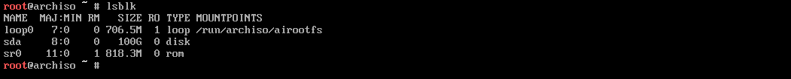Para crear las particiones usaremos cfdisk.
cfdisk
De tipo gpt porque estamos ante UEFI y creamos las particiones siguiendo la siguiente tabla.
| Size | Type | Which | Disk |
|---|---|---|---|
| 512 M | EFI System | / boot / efi | / dev / sdx1 |
| 50 G | Linux filesystem | / root | / dev / sdx2 |
| 45.5 G | Linux filesystem | / home | / dev / sdx3 |
| ( RAM / 2 ) G = 4 G | Linux swap | swap | / dev / sdx4 |
Hay que darle a Write y escribir 'yes', ademas son M no MB por tanto son 512MiB.
Para verificar que hicimos bien las particiones.
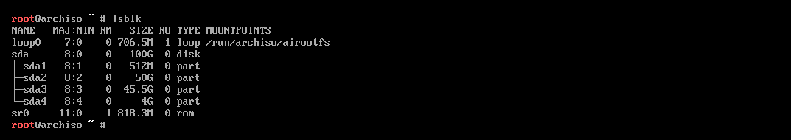Ahora hay que formatear las particiones.
mkfs.vfat -F 32 /dev/sdx1 mkfs.ext4 /dev/sdx2 mkfs.ext4 /dev/sdx3 mkswap /dev/sdx4 swapon
Lo que estamos haciendo.
| Command | What I'm doing? |
|---|---|
| mkfs.vfat -F 32 /dev/sdx1 | formatear el boot |
| mkfs.ext4 /dev/sdx2 | formatear el root en ext4 |
| mkfs.ext4 /dev/sdx3 | formatear el home en ext4 |
| mkswap /dev/sdx4 | formatear la swap |
| swapon | ininiar la swap |
mkfs i.e make file system.format
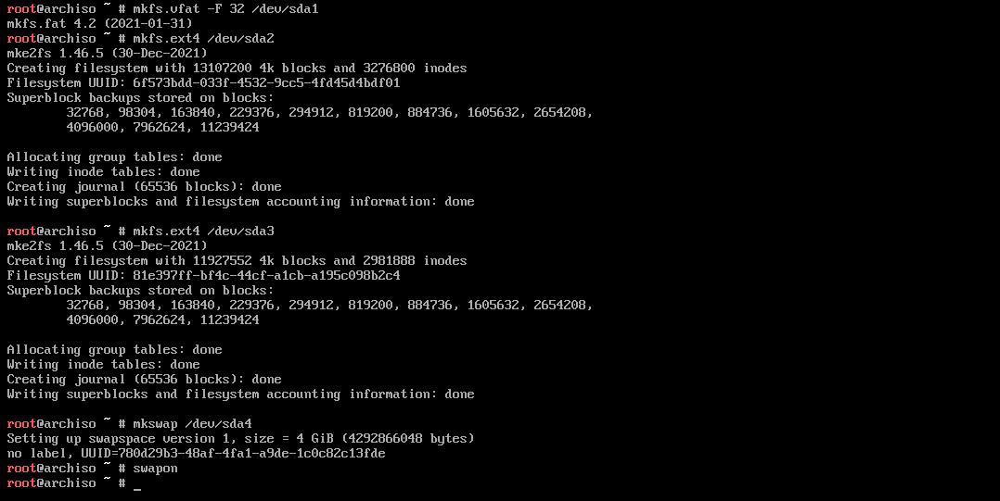Para montar las particiones.
mount /dev/sdx2 /mnt mkdir /mnt/boot mkdir /mnt/boot/efi mount /dev/sdx1 /mnt/boot/efi mkdir /mnt/home mount /dev/sdx3 /mnt/home
Podemos usar mkdir -p para asi no tener que usar dos veces mkdir pero por seguridad lo hacemos asi, ademas la x significa si es a, b, c depende de cada caso es uno u otro.
Instacion perse
Los paquetes necesarios para instalacion.
pacstrap /mnt base base-devel linux linux-firmware grub efibootmgr networkmanager nano sudo
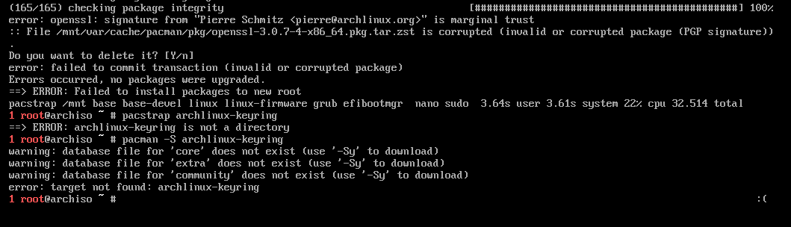Si sale esto hay que hacer pacman -Sy archlinux-keyring , y volver a ejecutar el commado anterior.
Si todo a ido correcto tendria que resultar en algo similar a esto.
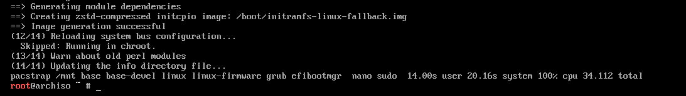Deberia ir rapida la conexion sin haber cambiado nada de la timezone, ya que en principio las mirrorlist estan configuradas al pais respecto donde descarga la ISO.
FileSystem Table
Crearemos la tabla (arbol) de los archivos del sistema.
genfstab -U /mnt >> /mnt/etc/fstab
Para verla cat /mnt/etc/fstab
Cambiamos al punto de montaje de la maquina virtual.
arch-chroot /mnt
Con $ ls deberias poder ver que se ha generado todo correctamente tambien dentro de /boot/efi/
Zonas horaria, reloj, teclado
Adecuamos la hora a nustra zona geografica.
ln -sf /usr/share/zoneinfo/Region/City /etc/localtime
Region = Europe, City = Madrid. Para ver todas las zonas timedatectl list-timezones
Ajustar hora del rejol local
hwclock --systohc
Tambien se puede usar hwclock -w
Generar los locale, para ello descomentamos "en_US.UTF-8 UTF-8" y "es_ES.UTF-8 UTF-8".
nano /etc/locale.gen
Posteriormente
locale-gen
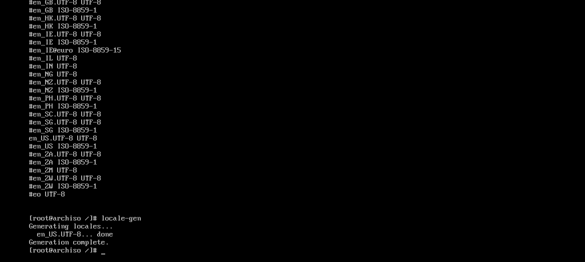Como podemos ver los que estan descomentados al aplicar locale-gen los genera.
Para dar el idioma al sistema
echo "LANG=en_US.UTF-8" > /etc/locale.conf
Layout de la vconsole (de la terminal tanto fuera de gui como en emulador)
echo "KEYMAP=us" > /etc/vconsole.conf
Para ver todos los keymaps localectl list-keymaps
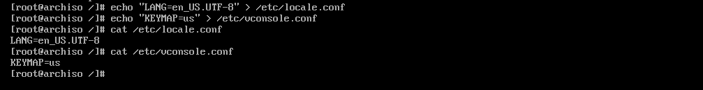Deberia quedar algo asi pero adaptado al idioma y layout que uses.
Gestion del sistema
Para poner el Hostname (Nombre de la maquina)
echo "amicia" > /etc/hostname
No tiene porque coincidir el nombre de la maquina virual con el nombre que le diste al crear la maquina en VMware.
A parte hay que editar el /etc/hosts, para la configuracion de la "DNS".
127.0.0.1 localhost ::1 localhost 127.0.0.1 amicia.localhost amicia
::1 es para IPv6
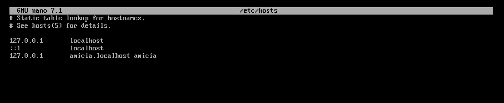Damos la password que querramos al usuario root.
passwd
Creamos nuestro usuario en el sistema.
useradd -m flor
-m crea el direcotrio home correspondiente a ese usuario.
Le damos una password al usuario creado con anterioridad.
passwd flor
Introducirlo en el grupo wheel para que pueda usar sudo, ademas de otros.
usermod -aG wheel,video,audio,storage flor
Editamos el /etc/sudoers para habilitar el sudo conocido.
nano /etc/sudoers
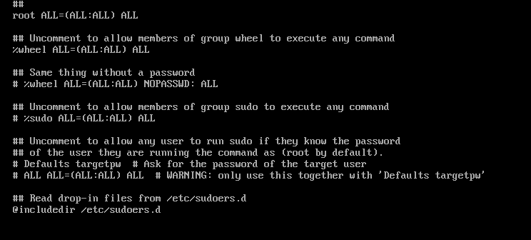Descomentamos SOLO el primer #wheel, como se ve en la imagen asi tiene que quedar.
Internet permanente
Haremos que se conecte a internet automaticamente al encender la maquina.
systemctl enable NetworkManager
Esto creara un enlace simbolico (soft link).
GRUB
Para instalar el GRUB en modo UEFI.
grub-install --efi-directory=/boot/efi --bootloader-id='Amicia' --target=x86_64-efi
El id del bootloader no hace falta que coincida ni con el nombre de la maquina ni el nombre puesto en VMware.
Para configurarlo.
grub-mkconfig -o /boot/grub/grub.cfg
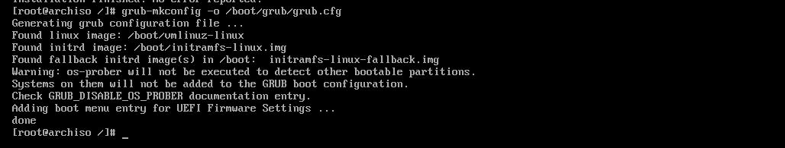Sale una alerta porque no tenemos **os-prober** abria que instalarlo y ejecutarlo en caso de que tengamos mas sitemas operativos en el sistema o querramos hacer un dual boot en un futuro en ese caso solo lo **ejecutamos** y **posteriormente** ejecutarmos la **configuracion**.
Desmontar
Ahora tocaria desmontar la ISO
exit umount -R /mnt shutdown now
Despues de esto la arrancamos y ya la tendriamos correctamente instalada.
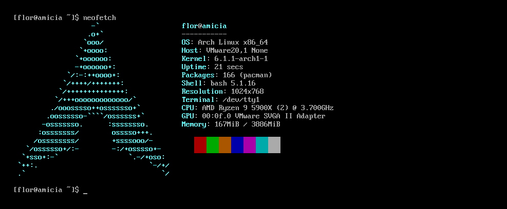Post-Instalacion
Aqui veremos cuales son los primeros pasos despues de haber instalado Arch, pero antes que todo actualizamos las mirrorlost por si las han cambiado.
sudo pacman -Syu
Driver Graficos
Para targetas grafias nvidia
pacman -S xf86-video-nouveau
Para ver tu targeta grafica lspci | grep VGA
Para VMware.
pacman -S open-vm-tools xf86-video-vmware xf86-input-vmmouse
Habilitamos el demonio del mismo.
systemctl enable vmtoolsd
De alli la d final, significa daemon.
Desktop Enviroment
Usaremos un tilling de windows manager en concreto Qtile, ya que esta Personalizacion esta centrada en el minimalismo y focalizada en la maxima productividad posible.
Qtile
En este paso instalaremos qtile, el emulador de terminal y el gestor de sessiones.
sudo pacman -S xorg qtile xterm alacritty lightdm lightdm-gtk-greeter
Para lanzarlo ***$ sudo systemctl enable lightdm y luego start, ctrl + alt + f2 otra terminal por defecto qtile usa xterm ??.
Instalaremos un bundle de software necesarios.
sudo pacman -S unzip locate which thunar ranger rofi sed code git firefox
sudo updatedb para que el locate localice
Solo hay que pegar mi config.py en /home/flor/.config/qtile/config.py
xprop WM_CLASS, sirver para saber como se llama la ventana para poder lanzarla en X espacio por default al invocarla.
| KEYBINDINGS | ACTION |
|---|---|
| MODKEY + ENTER | Abrir terminal |
| MODKEY + TAB | Ciclar entre las layouts disponibles |
| MODKEY + w | Cerrar la ventana que tiene el focus |
| MODKEY + CTRL + r | Reininiciar qtile |
| MODKEY + 1-9 | Cambiar entre los espacios de trabajo |
| MODKEY + SHIFT + 1-9 | Enviar la ventana que tiene el focus a ese espacio de trabajo |
| MODKEY + h | Cambiar el focus a la izquierda |
| MODKEY + j | Cambiar el focus hacia abajo o rotarlo en ese sentido |
| MODKEY + k | Cambiar el focus hacia arriba o rotarlo en ese sentido |
| MODKEY + l | Cambiar el focus hacia la derecha |
| MODKEY + [h,j,k,l] | Mover la ventana con el focus en sentido de correspondiente a [h,j,k,l] |
| MODKEY + n | Resetear las ventanas |
| MODKEY + CTRL + q | Apagar qtile |
| MODKEY + m | Lanzar rofi |
| MODKEY + SHIFT + m | Lanzar rofi pero de ventanas |
| MODKEY + b | Lanzar el browser |
| MODKEY + e | Lanzar el explorador |
| MODKEY + f | Toggle entre flotante y la correspondiente layout |
| MODKEY + s | Screenshoot pantalla completa |
| MODKEY + SHIFT + s | Screenshoot arrea de la pantalla |
Hay lanzamiento que estan preconfigurados para ventanas en concreto, ademas si estas en un grupo y cambias al mismo hace toggle al grupo anterior. Ademas lanza por defecnto en la ventada DEV
Fuentes
Instalaremos nerd fonts (Caskaydia Cove Nerd Font, Mononoki Nerd Font, JetBrainsMono Nerd Font)
mkdir /usr/share/fonts/TTF unzip fuenteDescargada.zip rm fuenteDescargada.zip sudo mv *.tff /usr/share/fonts/TTF
Si fueran otf creamos el directorio OTF y hacemos lo mismo, fc-list | grep "NombreFuente" para saber el nombre real,
Para aplicar los cambios
sudo fc-cache -fv
Las fuentes se pueden guardan tambien en ~/.local/share/fonts, pero esto implica que no sera funcional para el resto de usuarios.
Ahora hay que cambiar la fuente tanto en qtile, como en alacritty.
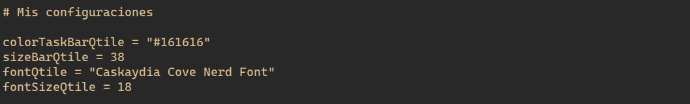Hay que hacer reboot para que se hagan efectivos los cambios (Qtile).
Alacritty
Para configurar alacritty lo unico es pegar mi archivo de configuracion en una un directorio hecho en .config.
mkdir /home/flor/.config/alacritty/
Con locate alacritty.yml encontramos el archvio de configuracion lo podemos pegar en la ruta descrita enteriormente y configurarlo desde 0. Basicamente es que viene por defecto un archvivo de configuracion completamente comentado.
Para cambiar a la fuente puesta en el subtitulo anterior
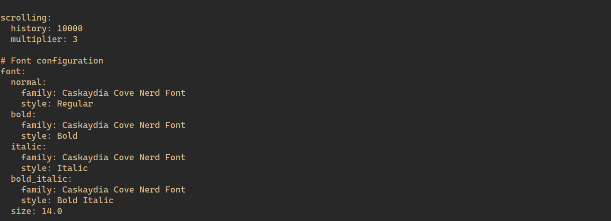Alacritty cambia a tiempo real una vez guardado los cambis abrimos una nuevga terminal los ves.
Alias
Creamos alias a ls cat y tree para usar bat lsd tree
sudo pacman -S bat lsd tree
Los alias los crearemos en /home/flor/.bashrc
alias ls="lsd" alias cat="bat" alias tree="tree -C" alias ll="ls -l"
Para recargar el bash source ~/.bashrc y source ~/.bash_profile, version corta . ~/.bashrc. Es opcional pero podemos borrar el alias relacionado a ls en /home/flor/.bashrc
Cambiar tema iconos y cursor
Los temas, cursores e iconos se descargan desde gnome-look.org, alli eliges el que quieres, para saber nuestra version de gtk.
gtk-launch --version
En principio todos los temas son compatibles asique saber la version es meramente por curisosidad.
Al cambiar el tema del gtk este cambiara en todos los programas que usen gtk como es logico.
unzip themeDescargado.zip unzip themeIconosDescargado.zip unzip themeMouseDescargado.zip

sudo mv "themeFolder" /usr/share/themes/ sudo mv "themeIconsFolder" /usr/share/icons/ sudo mv "themeMouseFolder" /usr/share/icons/
Instalar Engine Murrine.
sudo pacman -S gtk-engine-murrine
Para cambiar el tema e iconos, tenemos que crear 2 archivos desde el home nuestro de usuario i.e ~
touch .gtkrc-2.0 .config/gtk-3.0/settings.ini
Y pegamos en .gtkrc-2.0
gtk-theme-name="Gruvbox-Dark-BL" gtk-icon-theme-name="gruvbox_dark" gtk-font-name="Cantarell 11" gtk-cursor-theme-name="Adwaita" gtk-cursor-theme-size=0 gtk-toolbar-style=GTK_TOOLBAR_BOTH gtk-toolbar-icon-size=GTK_ICON_SIZE_LARGE_TOOLBAR gtk-button-images=0 gtk-menu-images=0 gtk-enable-event-sounds=0 gtk-enable-input-feedback-sounds=0 gtk-xft-antialias=1 gtk-xft-hinting=1 gtk-xft-hintstyle="hintfull" gtk-xft-rgba="rgb"
Cambiamos el nombre al theme-name, icon-theme-name y cursor-theme-name. El nombre tanto del tema de iconos como tema normal es el nombre que tenga la carpeta. Si quieres cambier la fuente tambien lo puedes hacer.
En .config/gtk-3.0/settings.ini pegamos
[Settings] gtk-theme-name=Gruvbox-Dark-BL gtk-icon-theme-name=gruvbox_dark gtk-font-name=Cantarell 11 gtk-cursor-theme-name=Adwaita gtk-cursor-theme-size=0 gtk-toolbar-style=GTK_TOOLBAR_BOTH gtk-toolbar-icon-size=GTK_ICON_SIZE_LARGE_TOOLBAR gtk-button-images=0 gtk-menu-images=0 gtk-enable-event-sounds=0 gtk-enable-input-feedback-sounds=0 gtk-xft-antialias=1 gtk-xft-hinting=1 gtk-xft-hintstyle=hintfull gtk-xft-rgba=rgb gtk-decoration-layout=menu:close
Cambiamos el nombre al theme-name, icon-theme-name y cursor-theme-name. El nombre tanto del tema de iconos como tema normal es el nombre que tenga la carpeta. Si quieres cambier la fuente tambien lo puedes hacer.
Y con reiniciar ya estaria aplicado el tema correctamente, en caso que no fucione cambiar por el nombre adecuado del tema dentro de estos ficheros.
nano /usr/share/gtk-2.0/gtkrc nano /etc/gtk-3.0/settings.ini nano /etc/gtk-2.0/gtkrc
Ahora cambiaremos el mouse
sudo pacman -S xcb-util-cursor
Para aplicar los cambios al mouse, cambiar al nombre del tema del mouse.
sudo nano /usr/share/icons/default/index.theme
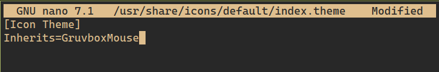Es en nombre de la carpeta es el nombre del tema.
Reiniciar y ya estaria los cambios aplicados. Tambien puedes descargar lxappearance y te lo hace todo el.
Software
Thunar
Este sera nuestro explorador de archivos grafico ya que es minimalista, ligero y tiene todas las funcionalidades que esperamos de un explorador de archivos.
sudo pacman -S thunar
El keymap ya se encuentra introducido en qtile, ademas la libreria que genera los graficos de thunar, firefox es gtk.
Rofi
sudo pacman -S rofi
El keybinding ya esta en qtile (los 2).
Para ponerle temas al rofi.
Background
Para tener fondo de pantalla
sudo apt install feh
Hay que crear el autostart.sh en .config/qtile/, para que nada mas inicie Arch carge.
nano .config/qtile/autostart.sh chmod +x .config/qtile/autostart.sh
#!/bin/sh feh --bg-scale /path/img &
Audio
Por defecto no hay auido asique toca instalarlo.
sudo pacman -S pulseaudio pavucontrol pulseaudio-alsa alsa-utils
Si al reiniciar tenemos audio nice si no meterlo en xsession o autostart.sh, el volumen por defecto es 0 asi que hay que subirlo desde el teclado recuerda que ya esta configurado previamente en qtile.
Para configurar salida, volumen entre otros.
pavucontrol
Xephry
Viene en el paquete de xorg
Xephyr -br -ac -noreset -screen 1680x1050 :1 & DISPLAY=:1 [gestor]
Ranger
Explarador de archivos de terminal por excelencia.
sudo pacman -S ranger
Para usarlo ranger en la terminal.
Para preview y programas por defecto al abrir.
Scrot
Para hacer capturas de pantalla.
sudo pacman -S scrot
Los keybinding ya estan configurados en qtile.
VLC
Reproductor de video maravilloso.
sudo pacman -S vlc
Para usarlo vlc file.format
Picom
Es un compositor, permite aplicar transparencias entre otras cosas, para ello hay que descomprimir mi archivo zip en una carpeta llamada picom preferiblemente.
cd picom meson --buildtype=release . build ninja -C build sudo ninja -C build install
Leer el readme para mas info, ademas hay que instalar uthash, y tener el base-devel instalado (pero deberiamos tenerlo ya que lo instalamos en la instalacion perse).
Creamos un directorio en .config con el nombre picom y dentro un archivo picom.conf
locate picom.sample.conf mkdir .config/picom/ cp /path/picom.sample.conf .config/picom/ cd /path/.config/picom/ mv picom.sample.conf picom.conf
Copiar la configuraion mia en ese documento.
Para aplicar la configuracion.
picon --config /path/picom.conf
Si da error usar el siguiente argumento --no-vsync, y se quedaria guardada esta configuracion.
Es importante habilitar la aceleracion 3D en las configuraciones de VMware de la maquina virtual si quieres que funcione las transparencias, fade entre otros.
Meterlo en el autostart.sh para que inicie
picom --experimental-backend -b
Zathura
Visor de documentos minimalista, vim like, autosync with latex.
sudo pacman -S zathura zathura-cb zathura-pdf-mupdf zathura-djvu zathura-ps
Configuracion de zathura, crear la carpeta y dentro de ella zathurarc
mkdir ./config/zathura nano ./config/zathura/zathurarc
En zathurarc pegamos mi archivo de configuracion.
CMUS
Reproductor de musica de terminal.
sudo pacman -S cmus
Para instalar un tema solo hay que crear la carpeta .cmus en .config si no existe
mkdir .config/cmus
Y pegar mi archvio de theme alli, y luego dentro de cmus
:colorscheme themeCustom
El nombre basicamente es el nombre del archivo
NVIM
Lighdm
TeX
Java
Mysql
PHP
Front-End (HTML5, CSS3, JS)
Servidor Web